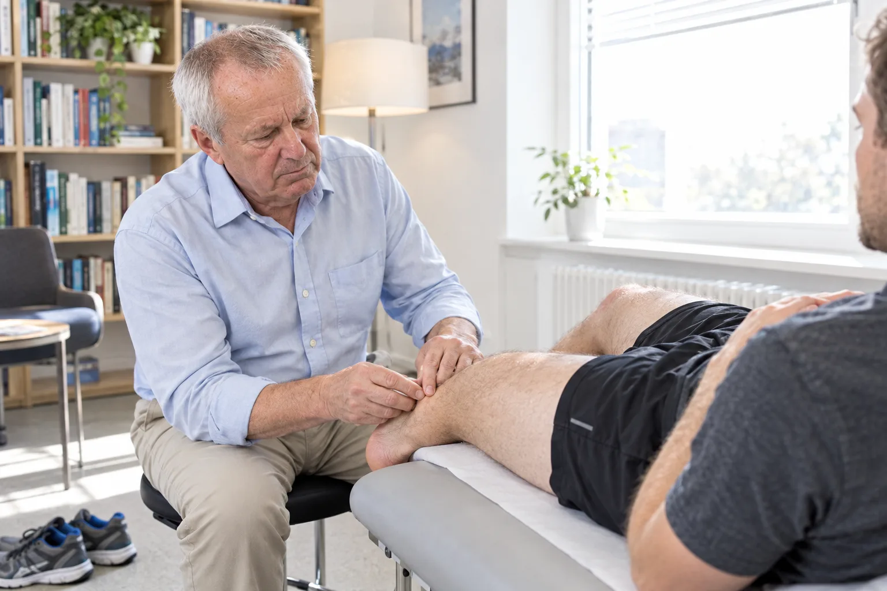
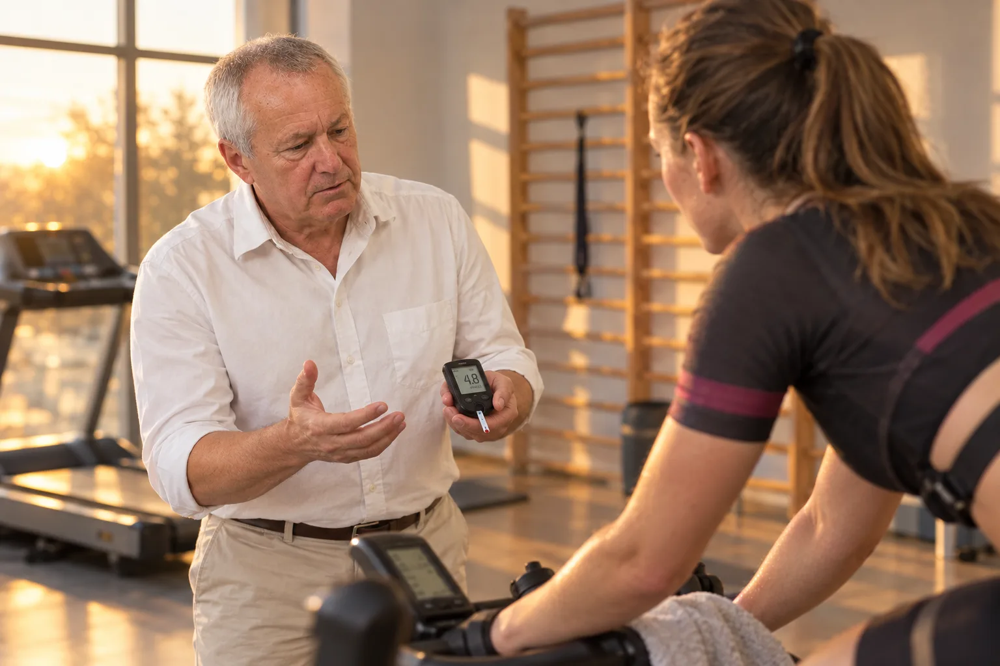
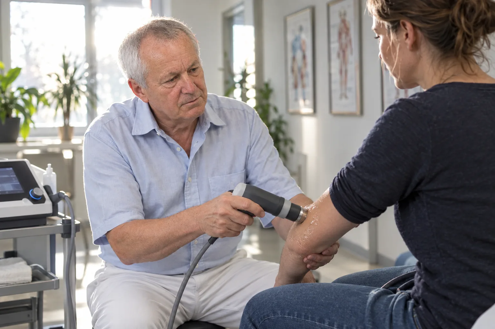

Leistungen
Fünf Bereiche, ein Arzt.
Von der frischen Verletzung bis zum Reise-Check. Untersucht, erklärt und behandelt von Dr. Pfeiler selbst.
Sportmedizin
Diagnostik, Behandlung und Vorbeugung von Sportverletzungen. Klinische Untersuchung und Ultraschall in der Praxis.

- Diagnostik
- Klinische Untersuchung und Ultraschall von Muskeln, Sehnen und Gelenken.
- Behandlung
- Konservative Behandlung nach Stufenplan bis zur vollen Belastung.
- Vorbeugung
- Screening von Kraft, Beweglichkeit und Seitenunterschieden. Übungsprogramm.
Leistungsdiagnostik
Laktat-Stufentest, Belastungs-EKG, Herzultraschall. Aus den Werten ein Trainingsplan.

- Laktat-Test
- Stufentest mit Laktatmessung. Trainingsbereiche für Puls, Tempo, Watt.
- Belastungs-EKG
- Ergometrie mit EKG und Blutdruck unter steigender Belastung.
- Herzultraschall
- Ultraschall des Herzens: Kammern, Klappen, Pumpfunktion.
- Trainingsplan
- Trainingsbereiche und Wochenstruktur aus der Diagnostik. Kontrolltermine.
Intern
Noch zu klären: welche Untersuchungen in der Praxis selbst stattfinden und welche in Kooperation.
Sport-Reha
Beratung vor der Operation, Nachsorge und Kontrollen bis zur Sportfreigabe. Auch bei Eingriffen in anderen Häusern.
- Vor und nach der OP
- Befund und Bildgebung vor dem Eingriff, Nachbehandlungsplan danach.
- Zweite Meinung
- Einschätzung, ob eine Operation nötig ist oder eine konservative Behandlung ausreicht.
- Kontrollen
- Verlaufskontrollen mit Messwerten bis zur Sportfreigabe.
Arthrosetherapie
Stoßwelle, Hyaluronsäure und Eigenblut bei Arthrose und Sehnenreizungen. Selbstzahlerleistungen, Kosten vorab schriftlich.

- Stoßwelle
- Extrakorporale Stoßwellentherapie bei Fersensporn, Kalkschulter, Tennisarm.
- Hyaluronsäure
- Injektion in das Gelenk, einmalig oder als Serie.
- Eigenblut (ACP)
- Plättchenreiches Plasma aus Eigenblut, Injektion in Gelenk oder Sehne.
Intern
Selbstzahlerleistungen; Kosten werden vorher schriftlich vereinbart. Evidenzhinweise (S3-Leitlinie) gehören ins Aufklärungsgespräch, nicht auf die Seite.
Allgemein- und Reisemedizin
Check-up, reisemedizinische Beratung und Impfungen, Tauglichkeitsuntersuchungen für Tauchen und Fallschirmsprung.
- Check-up
- Anamnese, körperliche Untersuchung, Labor, EKG, Ultraschall.
- Reisemedizin
- Impfberatung, Malariaprophylaxe, Reiseapotheke. Termin 6 bis 8 Wochen vor Abreise.
- Tauch- und Sprungtauglichkeit
- Untersuchung und Bescheinigung für Tauchkurs und Fallschirmsprung.
Intern
Abrechnungsangaben (GOÄ, Erstattung, Beihilfe) vor dem Livegang mit dem Arzt klären; die Redaktionstexte nannten teils Kassenleistungen.
Nächster Schritt
Termin telefonisch.
0160 5728656Im Notfall: Rettungsdienst 112. Außerhalb der Sprechzeiten: ärztlicher Bereitschaftsdienst 116 117.